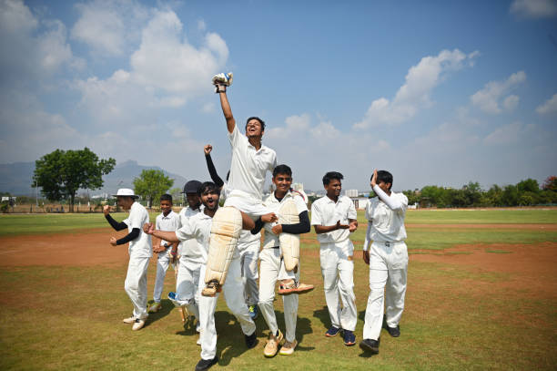

The Rewards of Football
Despite the challenges, cricket offers countless benefits that enrich players' lives physically, mentally, and socially.
How cricket Enhances Your Life
The dedication required to maintain cricket as a hobby is rewarded with numerous benefits that extend far beyond the pitch. These advantages touch every aspect of a player's life, making the challenges worthwhile. From physical health to mental well-being and social connections, cricket offers a comprehensive package of benefits that few other hobbies can match.
Physical Health Benefits
cricket provides an exceptional full-body workout that improves cardiovascular health, builds muscle strength, and enhances coordination. The combination of walking, jogging, sprinting, and sudden changes in direction makes it an excellent interval training session. Studies show that regular cricket players have better aerobic capacity, lower body fat percentages, and stronger bones than sedentary individuals.

The sport develops all-around athleticism. Dribbling improves foot-eye coordination, passing and shooting enhance precision, while tackling and shielding develop balance and strength. Unlike gym workouts that can feel repetitive, cricket disguises fitness as fun, making it easier to maintain regular exercise habits. Players often find they stay in shape without the monotony of traditional workouts.
cricket also promotes healthy lifestyle choices outside of play. Players tend to be more conscious of nutrition to fuel performance and recovery. Many reduce or eliminate smoking and excessive drinking to maintain their playing ability. The sport thus becomes a gateway to broader health consciousness that extends into other areas of life.
Mental and Emotional Advantages
The mental benefits of cricket are as significant as the physical ones. The game requires constant decision-making under pressure, which sharpens cognitive abilities and improves stress management skills. Players develop better focus, quicker reaction times, and enhanced spatial awareness that transfer to daily life and professional settings.
cricket serves as a powerful stress reliever. The physical exertion releases endorphins, while the mental absorption in the game provides a break from life's worries. Many players describe the pitch as their "happy place" where other concerns fade away during play. This mental reset can improve overall mood and productivity in other areas.
The sport also builds resilience and emotional intelligence. Dealing with losses, mistakes, and setbacks on the pitch teaches players to handle adversity in healthier ways. The need to work with different personalities fosters empathy, communication skills, and conflict resolution abilities. These soft skills prove valuable in personal and professional relationships beyond cricket.
Social and Community Benefits
cricket creates instant social connections. Joining a team or pickup game provides a built-in social circle with shared interests. The camaraderie developed through shared struggles and triumphs often leads to lifelong friendships. For many adults, football teams become their primary social outlet outside work and family.
The sport breaks down social barriers, uniting people across ages, professions, and backgrounds. On the pitch, a CEO and a college student might be equals, judged only by their ability and attitude. This democratizing effect fosters understanding and tolerance between diverse groups. cricket communities often organize social events, charity matches, and other activities that strengthen local bonds.
For parents, cricket offers valuable family bonding opportunities. Many share their love of the game with children, whether by playing together, attending matches, or simply discussing the sport. These shared experiences create lasting memories and traditions that span generations within families.